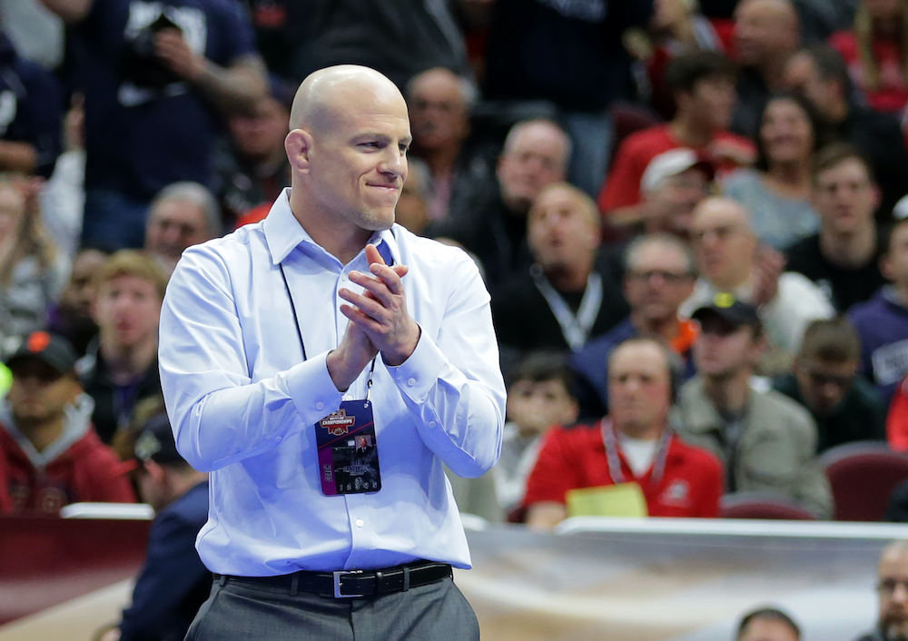

Since taking over the helm at Penn State, head coach Cael Sanderson has continued to prove his squads will consistently compete for national titles. The Nittany Lions skills were once again on display Monday night as they shut out the Maryland Terrapins 44 to 0. Penn State went out and showcased what they’ve been doing for the past decade which was put points on the board. The dual meet started out with the much-anticipated college debut of Greg Kerkvliet at heavyweight. Kerkvliet, who many thought might miss this season due to injury got the Nittany Lions off to a hot start as he scored the first period fall to put PSU up by six.
125 pounder Robert Howard followed that up with a fall of his own to double the score before Roman Bravo-Young, and Nick Lee put up back-to-back major decisions to continue the bonus point streak. Freshman Joe Lee rebounded from his loss to Ethan Smith of Ohio State on Friday by posting a fall to stretch out the Nittany Lions lead even further. The dual was then closed out with three straight bonus point victories as Carter Starocci, Aaron Brooks, and Michael Beard all put up major decisions. True freshman Beau Bartlett secured a controlled win over Maryland’s Hunter Baxter while Luke Gardner closed out his Penn State career with an 8-2 win over Michael Doetsch at 157 pounds. While many continue to leave the Iowa Hawkeyes as the prohibitive favorites (deservedly so) to win the Big Ten and NCAA title this season, what this young Penn State team has shown throughout the year is that they’ve gotten better as the season went on.
Sanderson’s squad missed their first two dual meets due to covid and when they finally did take the mat, it wasn’t a performance typically expected of a Cael Sanderson coached team. This however was clearly due to rust and the Nittany Lions proved that to be the case with each performance following that. Underclassmen Carter Starocci is just one example of steadily improving as this season has progressed. The star Freshman came into this season with high expectations following a stellar redshirt year. In his first competition of the year however, Starocci would drop his first match to Indiana’s DJ Augustin after getting thrown to his back early falling into a six-point hole. Since that time, Starocci has gone undefeated knocking off Michigan’s Logan Massa, and Ohio State’s Kaleb Romero. Both wrestlers were ranked third, and sixth at the time respectfully.
image courtesy of Hunter Martin Getty Images
Freshman 125 pounder Robert Howard didn’t make his season debut until last weekend, but he himself has already proven to be a tough out for some of the top wrestlers in the country and should be someone to watch out for in the postseason. Penn State boasts a lineup where nine of their 10 starters are ranked in the top 20 with Howard being the lone wrestler outside the top 15. What’s even more impressive is that of their 10 starters seven of them are underclassmen. This isn’t something that is uncommon for Penn State, it’s actually something that they know all too well. During PSU’s first national title run under Sanderson, they sent seven underclassmen into the postseason of which four would go onto be high All Americans with Quentin Wright winning a national title.
That group along with some other youngsters would go onto win the next three national titles in impressive fashion. After graduating the star-studded group, fans were left to question who’s turn it would be to capture the team title. Sanderson and his staff had other plans, and after redshirting a group of freshmen with extensive high school resumes Penn State claimed another national title in 2016. This group would also go onto claim the next three team titles following the first. Sanderson and his staff now once again find themselves bolstering an extremely young lineup, but the expectations remain the same.
The Hawkeyes more than likely would’ve won the national title a year ago had the tournament not been canceled due to Covid-19. They’ve been impressive, looking like the Iowa Hawkeyes of old this season but the Nittany Lions look rejuvenated and ready to reclaim their crown. While other teams have had to reload following the graduation of their seniors, Penn State simply retools and it’s back to business as usual.
By Rich Perez